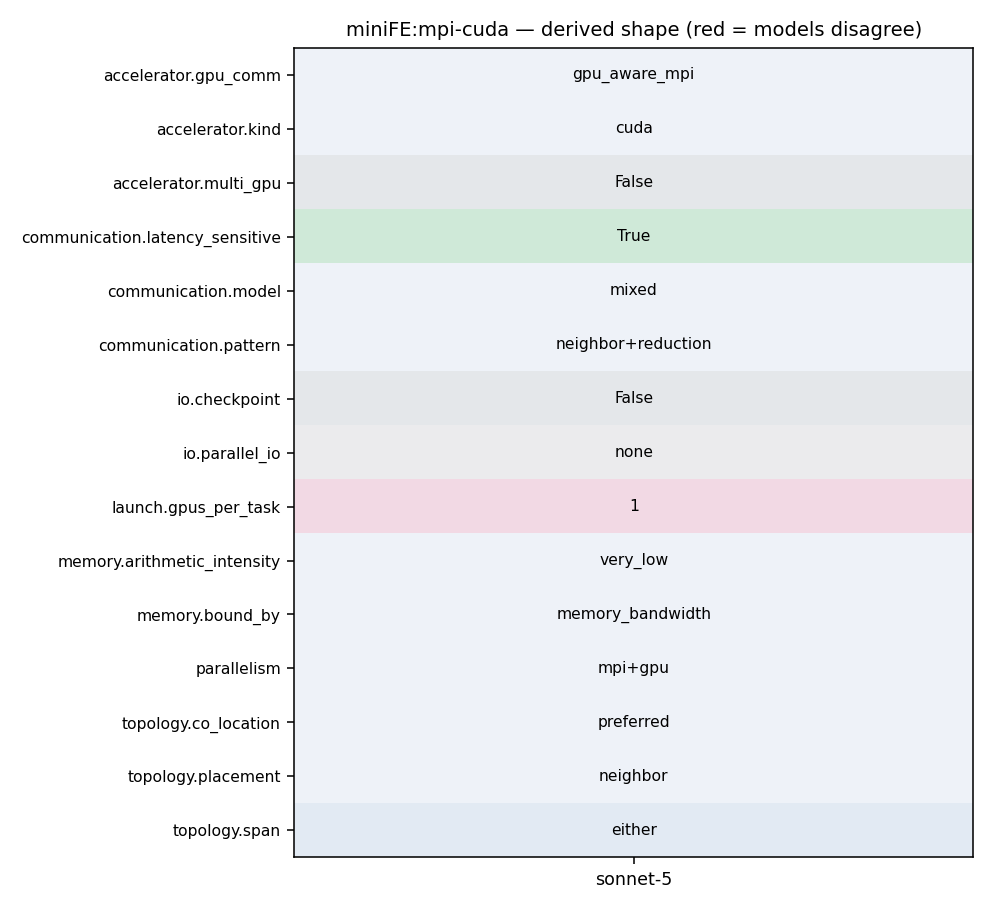

mpirun -np <N> miniFE.x nx=<X> ny=<Y> nz=<Z> (1 GPU per MPI rank; NVCC arch=compute_35 build)
113 #endif 114 cudaEventRecord(CudaManager::e1,CudaManager::s1); 115 116 #ifdef GPUDIRECT 117 Scalar * x_external = thrust::raw_pointer_cast(&x.d_coefs[local_nrow]); 118 #else 119 std::vector<Scalar>& x_coefs = x.coefs; 120 Scalar* x_external = &(x_coefs[local_nrow]); 121 #endif 122 123 MPI_Datatype mpi_dtype = TypeTraits<Scalar>::mpi_type(); 124 125 // Post receives first 126 for(int i=0; i<num_neighbors; ++i) { 127 int n_recv = recv_length[i]; 128 MPI_Irecv(x_external, n_recv, mpi_dtype, neighbors[i], MPI_MY_TAG, 129 MPI_COMM_WORLD, &request[i]); 130 x_external += n_recv; 131 } 132 133 #ifdef MINIFE_DEBUG 134 os << "launched recvs\n"; 135 #endif 136
18 # the exchange_externals function. 19 20 #CPPFLAGS = -I. -I../utils -I../fem $(MINIFE_TYPES) $(MINIFE_MATRIX_TYPE) -DHAVE_MPI -DMPICH_IGNORE_CXX_SEEK #-DMINIFE_DEBUG 21 CPPFLAGS = -I. -I../utils -I../fem $(MINIFE_TYPES) $(MINIFE_MATRIX_TYPE) -DHAVE_MPI -DMPICH_IGNORE_CXX_SEEK -DMATVEC_OVERLAP #-DGPUDIRECT #-DMINIFE_DEBUG 22 #CPPFLAGS = -I. -I../utils -I../fem $(MINIFE_TYPES) $(MINIFE_MATRIX_TYPE) #-DHAVE_MPI -DMPICH_IGNORE_CXX_SEEK -DMATVEC_OVERLAP #-DGPUDIRECT #-DMATVEC_OVERLAP #-DMINIFE_DEBUG 23 #CPPFLAGS = -I. -I../utils -I../fem $(MINIFE_TYPES) $(MINIFE_MATRIX_TYPE) -DHAVE_MPI -DMPICH_IGNORE_CXX_SEEK -DGPUDIRECT -DMATVEC_OVERLAP #-DMINIFE_DEBUG 24
37 MPICFLAGS=-I$(MPI_HOME)/include -pthread 38 MPILDFLAGS=-L$(MPI_HOME)/lib -lmpi -lmpi_cxx -ldl -lm -lrt -lnsl -lutil -lm -ldl 39 40 NVCCFLAGS=-lineinfo -gencode=arch=compute_35,code=\"sm_35,compute_35\" #-gencode=arch=compute_20,code=\"sm_20,compute_20\" 41 42 NVCC=nvcc -Xcompiler -fopenmp 43 CXX=mpicxx
260 first=false; 261 } 262 263 //TODO do this with GPU direct? 264 cudaMemcpyAsync(&result,thrust::raw_pointer_cast(&d[0]),sizeof(magnitude),cudaMemcpyDeviceToHost,CudaManager::s1); 265 cudaEventRecord(CudaManager::e1,CudaManager::s1); 266 cudaEventSynchronize(CudaManager::e1); 267 268 #ifdef HAVE_MPI 269 nvtxRangeId_t r1=nvtxRangeStartA("MPI All Reduce"); 270 magnitude local_dot = result, global_dot = 0; 271 MPI_Datatype mpi_dtype = TypeTraits<magnitude>::mpi_type();
1 #ifndef _exchange_externals_hpp_ 2 #define _exchange_externals_hpp_ 3 4 //@HEADER 5 // ************************************************************************ 6 // 7 // HPCCG: Simple Conjugate Gradient Benchmark Code 8 // Copyright (2006) Sandia Corporation 9 // 10 // Under terms of Contract DE-AC04-94AL85000, there is a non-exclusive 11 // license for use of this work by or on behalf of the U.S. Government. 12 // 13 // This library is free software; you can redistribute it and/or modify 14 // it under the terms of the GNU Lesser General Public License as 15 // published by the Free Software Foundation; either version 2.1 of the 16 // License, or (at your option) any later version. 17 // 18 // This library is distributed in the hope that it will be useful, but 19 // WITHOUT ANY WARRANTY; without even the implied warranty of 20 // MERCHANTABILITY or FITNESS FOR A PARTICULAR PURPOSE. See the GNU 21 // Lesser General Public License for more details. 22 // 23 // You should have received a copy of the GNU Lesser General Public 24 // License along with this library; if not, write to the Free Software
95 // 96 // Fill up send buffer 97 // 98 99 int BLOCK_SIZE=256; 100 int BLOCKS=min((int)(A.d_elements_to_send.size()+BLOCK_SIZE-1)/BLOCK_SIZE,2048); 101 102 copyElementsToBuffer<<<BLOCKS,BLOCK_SIZE,0,CudaManager::s1>>>(thrust::raw_pointer_cast(&x.d_coefs[0]), 103 thrust::raw_pointer_cast(&A.d_send_buffer[0]), 104 thrust::raw_pointer_cast(&A.d_elements_to_send[0]), 105 A.d_elements_to_send.size()); 106 cudaCheckError(); 107 108 #ifndef GPUDIRECT 109 std::vector<Scalar>& send_buffer = A.send_buffer; 110 //wait for packing to finish 111 cudaMemcpyAsync(&send_buffer[0],thrust::raw_pointer_cast(&A.d_send_buffer[0]),sizeof(Scalar)*A.d_elements_to_send.size(),cudaMemcpyDeviceToHost,CudaManager::s1); 112 cudaCheckError(); 113 #endif 114 cudaEventRecord(CudaManager::e1,CudaManager::s1); 115 116 #ifdef GPUDIRECT 117 Scalar * x_external = thrust::raw_pointer_cast(&x.d_coefs[local_nrow]); 118 #else
260 first=false; 261 } 262 263 //TODO do this with GPU direct? 264 cudaMemcpyAsync(&result,thrust::raw_pointer_cast(&d[0]),sizeof(magnitude),cudaMemcpyDeviceToHost,CudaManager::s1); 265 cudaEventRecord(CudaManager::e1,CudaManager::s1); 266 cudaEventSynchronize(CudaManager::e1); 267 268 #ifdef HAVE_MPI 269 nvtxRangeId_t r1=nvtxRangeStartA("MPI All Reduce"); 270 magnitude local_dot = result, global_dot = 0; 271 MPI_Datatype mpi_dtype = TypeTraits<magnitude>::mpi_type();
485 const int MAX_BLOCKS=32768; 486 int NUM_BLOCKS=min(MAX_BLOCKS,(int)(A.rows.size()+BLOCK_SIZE-1)/BLOCK_SIZE); 487 488 #ifndef MATVEC_OVERLAP 489 exchange_externals(A, x); 490 matvec_ell_kernel<<<NUM_BLOCKS,BLOCK_SIZE,0,CudaManager::s1>>>(A.getPOD(), x.getPOD(), y.getPOD()); 491 #else 492 nvtxRangeId_t r1=nvtxRangeStartA("begin exchange"); 493 begin_exchange_externals(A,x);
485 const int MAX_BLOCKS=32768; 486 int NUM_BLOCKS=min(MAX_BLOCKS,(int)(A.rows.size()+BLOCK_SIZE-1)/BLOCK_SIZE); 487 488 #ifndef MATVEC_OVERLAP 489 exchange_externals(A, x); 490 matvec_ell_kernel<<<NUM_BLOCKS,BLOCK_SIZE,0,CudaManager::s1>>>(A.getPOD(), x.getPOD(), y.getPOD()); 491 #else 492 nvtxRangeId_t r1=nvtxRangeStartA("begin exchange"); 493 begin_exchange_externals(A,x);
34 #c++ -L/usr/local/cuda//lib64 -L/usr/local/cuda//lib -L/lib -L/lib -L/lib -Wl,-rpath,/lib -L/lib -Wl,-rpath,/lib -L/lib -Wl,-rpath,/lib -L/lib -L/lib -I/usr/local/mvapich/include -L/usr/local/mvapich/lib -lmpichcxx -lmpich -lopa -lmpl -lcudart -lcuda -libverbs -ldl -lrt -lm -lpthread 35 36 #openmpi 37 MPICFLAGS=-I$(MPI_HOME)/include -pthread 38 MPILDFLAGS=-L$(MPI_HOME)/lib -lmpi -lmpi_cxx -ldl -lm -lrt -lnsl -lutil -lm -ldl 39 40 NVCCFLAGS=-lineinfo -gencode=arch=compute_35,code=\"sm_35,compute_35\" #-gencode=arch=compute_20,code=\"sm_20,compute_20\" 41
18 # the exchange_externals function. 19 20 #CPPFLAGS = -I. -I../utils -I../fem $(MINIFE_TYPES) $(MINIFE_MATRIX_TYPE) -DHAVE_MPI -DMPICH_IGNORE_CXX_SEEK #-DMINIFE_DEBUG 21 CPPFLAGS = -I. -I../utils -I../fem $(MINIFE_TYPES) $(MINIFE_MATRIX_TYPE) -DHAVE_MPI -DMPICH_IGNORE_CXX_SEEK -DMATVEC_OVERLAP #-DGPUDIRECT #-DMINIFE_DEBUG 22 #CPPFLAGS = -I. -I../utils -I../fem $(MINIFE_TYPES) $(MINIFE_MATRIX_TYPE) #-DHAVE_MPI -DMPICH_IGNORE_CXX_SEEK -DMATVEC_OVERLAP #-DGPUDIRECT #-DMATVEC_OVERLAP #-DMINIFE_DEBUG 23 #CPPFLAGS = -I. -I../utils -I../fem $(MINIFE_TYPES) $(MINIFE_MATRIX_TYPE) -DHAVE_MPI -DMPICH_IGNORE_CXX_SEEK -DGPUDIRECT -DMATVEC_OVERLAP #-DMINIFE_DEBUG 24
93 // 94 95 // 96 // Fill up send buffer 97 // 98 99 int BLOCK_SIZE=256; 100 int BLOCKS=min((int)(A.d_elements_to_send.size()+BLOCK_SIZE-1)/BLOCK_SIZE,2048); 101 102 copyElementsToBuffer<<<BLOCKS,BLOCK_SIZE,0,CudaManager::s1>>>(thrust::raw_pointer_cast(&x.d_coefs[0]), 103 thrust::raw_pointer_cast(&A.d_send_buffer[0]), 104 thrust::raw_pointer_cast(&A.d_elements_to_send[0]), 105 A.d_elements_to_send.size()); 106 cudaCheckError(); 107 108 #ifndef GPUDIRECT 109 std::vector<Scalar>& send_buffer = A.send_buffer; 110 //wait for packing to finish 111 cudaMemcpyAsync(&send_buffer[0],thrust::raw_pointer_cast(&A.d_send_buffer[0]),sizeof(Scalar)*A.d_elements_to_send.size(),cudaMemcpyDeviceToHost,CudaManager::s1); 112 cudaCheckError(); 113 #endif 114 cudaEventRecord(CudaManager::e1,CudaManager::s1); 115 116 #ifdef GPUDIRECT
41 42 ----------------------------------------------------------------------- 43 44 3. Scaling the MiniFE Mantevo Mini-App Problem 45 46 To scale the MiniFE problem size, we typically apply the following 47 rules: 48 49 (1) Either: double the X dimension for one run, then double the 50 Y-dimension for the next run. Keep the Z-dimension fixed. This is useful 51 for some application runs. 52 53 (2) Or: define a base problem size (nx * ny * nz) and then use the 54 following equation set nz = ny = nz = cbrt( (base_nx * base_ny * 55 base_nz) * (number of MPI ranks) ). This is useful for some other 56 application runs. 57 58 Note - that (1) and (2) create different communication volumes/patterns 59 and execute over threaded compute resources. They are both of interest. 60 61 ----------------------------------------------------------------------- 62 63 4. Bugs/Issues/Questions with MiniFE?